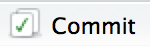

Usages
Les modifications des lignes de codes, des fichiers et des dossiers, en gros de tout le projet, sont enregistrés et accessibles.
Dans l’onglet Git, on trouve la liste des modifications réalisées selon qu’il s’agit de :
 Modification: le contenu du fichier a été modifié
Modification: le contenu du fichier a été modifié- Untracked: un nouveau fichier a été ajouté au projet
 Supprimé: un fichier a été supprimé
Supprimé: un fichier a été supprimé
On peut aussi faire une analyse de différence entre versions (celle en local et celle stockée sur Git) : 

Les modidications apparaissent en vert, pour les ajouts, en rouge, pour les suppressions. Les lignes grises reprennent les éléments stables autours des modifications.
Enregistrement des modifications
Une notion essentielle de Git est le commit.
Le commit est un instantané du code à un moment donné. Ils sont utilisés comme des relais ou des points d’ancrage.
Après un commit, modifier le code est sans risque, puisqu’on peut toujours revenir au relais précédent.
Chaque commit comprend 5 composants clé:
- un identifiant unique appelé SHA (secure hash algorithm)
- un
changeset décrivant quels fichiers ont été ajoutés, modifiés, supprimés
- un message lisible décrivant le
commit
- un parent: le
commit qui précède celui décrit (sauf pour le 1er commit, et sauf pour les fusions (merge entre 2 parents)
- un auteur du
commit

Avec RStudio, la fenêtre de commitest composée de :
- en haut à gauche, les modifications en cours
- en haut à droite, vous pouvez renseignez un message décrivant les modif du `commit
- en bas, les différences sur le fichier séelctionné en haut à gauche
La fenêtre de commit permet de faire ces deux étapes. Cliquer , ou Ctrl + Alt + m
Un commit est créé :
- en sauvegardant le fichier modifié
- ouvrant la fenêtre de
commit
- en sélectionnant les fichiers inclus dans le nouveau
commit. On coche les fichiers à inclure. Ctrl + A pour tous les sélectionner et Entrée pour tous les cocher
- en décrivant le
commit
- en cliquant
commit
Commit best practices
Dasn l’idéal chaque commit doit être minimal mais complet:
- minimal: un
commit doit contenir les chagement liés à un seul problème. Cela facilitera la compréhension du commit et sa description en un seul message. A chaque problème son commit!
- complet: un
commit doit résoudre le problème qu’il traite. Il devrait inclure un test démontrant la résolution du problème
Chaque message de commitdevrait
- être concis et claire. Indiquer ce qui est fait avec suffisament de détails.
- décrire le pourquoi et non le quoi ou le comment. L’analyse des différences montrera ce qui a été fait. Le message doit être synthétique et décrire les raisons des modifications réalisées
Ainsi, le travail à plusieurs, le codage simultané devrait être faciliter, notamment la résolution de conflits entre codes. Les nouveaux venus dans les projets comprendront mieux ce qui est fait.
Avec le suivi de version, l’apparition des bugs sera plus simple à suivre.
Le commit c’est surtout une documentation pour soi !
Bien entendu, dans la pratique, tout n’est pas toujours parfait… Plusieurs petits commit mal renseignés, valent mieux qu’un gros bien fait.